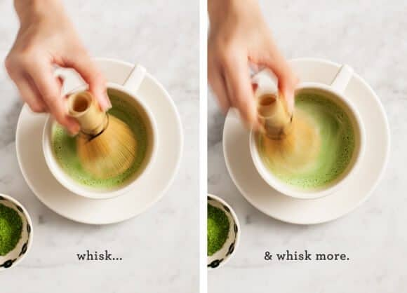

Challenge
The challenge of the lab is to think ahead of the high-level tasks and format it in a list form for the computer to process via code.
Problems
I had a mix up in communication and was unable to find a partner last minute. Therefore, I had the issue of working alone and trying to figure out the process myself. I had difficulties trying to outline the tasks in regard as a webpage process, but I tried my very best as one without much coding experience.
Results
Completed my lists and added to my index.html file here:
TASK 1
How to Make a Matcha Latte 1. Gather ingredients: ½ - 1 tsp matcha powder, hot water, sweetener, and milk of choice. 2. Gather tools: mug, spoon, and matcha whisk. 3. Spoon the matcha into a large mug. 4. Add the hot water and whisk briskly, in an up and down motion, until frothy - about 30 seconds or so. 5. Add sweetener and milk of your choice to taste and mix until well combined. TASK 2
//Create a Matcha Latte via Webpage Process
// 1. Print the background before each turn
// 2. Accept user input
// a. User provides input through clicking
// 3. Validate user move
// a. Clicking through queues each animation
// 4. Evaluate possible moves
// a. User can choose type of sweetener
// b. User can choose type of milk
// 5. Print corresponding animation to user’s choice